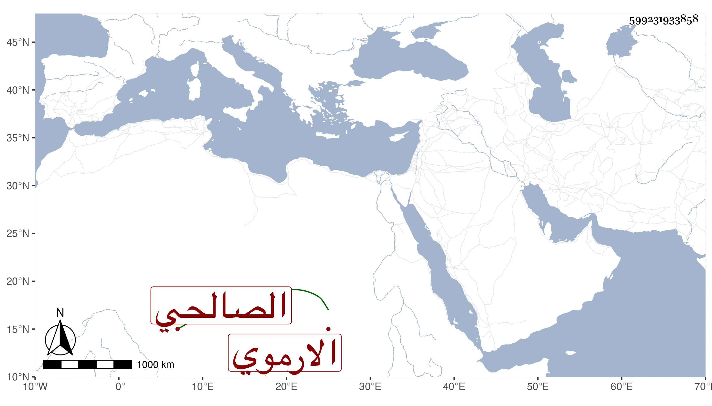

0902Sakhawi.DawLamic.ITO20230111-ara1.EIS1600.599231933858
Biography ID: 599231933858
813
هندة وتدعى هند ابنة ناصر الدين محمد بن الشيخ أبي الحسن على بن محمد بن الركن إبراهيم بن عبد الله بن يوسف الارموي الصالحي ، أحضرت في الرابعة سنة ست وخمسين وسبعمائة على ست العرب حفيدة الفخر بن البخاري المجلس الحادي والستين من أمالي الحسين بن هرون الضبي والثالث من حديث أبي روق الهزاني ومسلسلات الابراهيمي ، وأجاز لهافي سنة سبع وخمسين أحمد بن عبد الرحمن المرداوي وابن قيم الضيائية والاعزازي والبياني وعمر بن عثمان بن سالم ابن خلف وابراهيم بن القواس ومحمد بن موسى الشيرجى ومحمود المنيحى والصفدي وابن كثير والفلانسي والعز بن جماعة والموفق الحنبلي ومظفر العطار في آخرين ، وحدثت سمع منها الفضلاء كابن موسى والموفق الابي في سنة مس عشرة ، وذكرها شيخنا في معجمه وقال أجازت في استدعاء ابنتي رابعة ، ماتت ...
